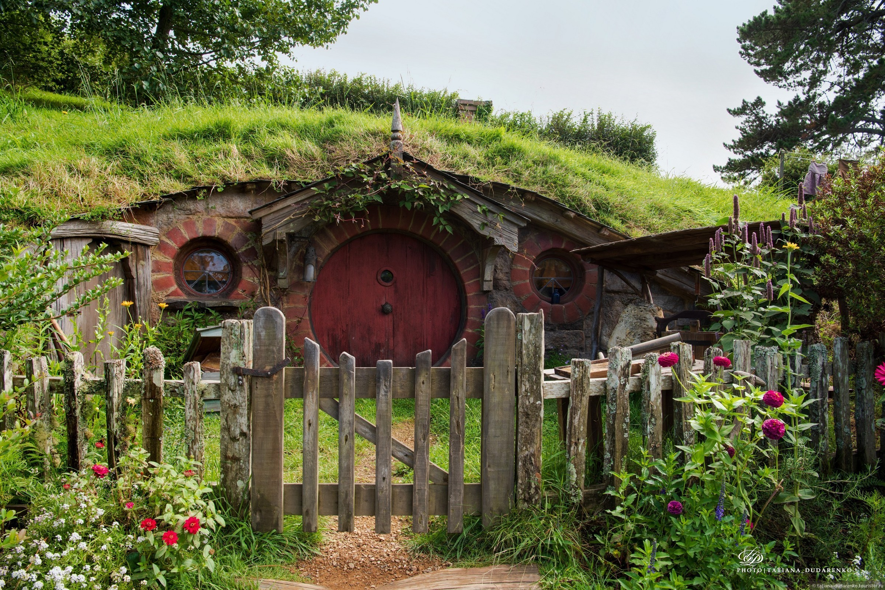

|  |
Хоббитон— деревня, ставшая популярным местом съемок фильма «Властелин колец». Деревня была специально создана для съемок трилогии «Властелин Колец» и «Хоббит» по одноименным произведениям Дж. Р.Толкина. Небольшая деревня Хоббитон в фильме представляет собой место обитания выдуманного писателем народа.Искусно выполненные домики, ухоженные сады, обилие живописных деталей позволяют путешественнику в полной мере окунуться в узнаваемую с первого шага атмосферу любимых фильмов. |